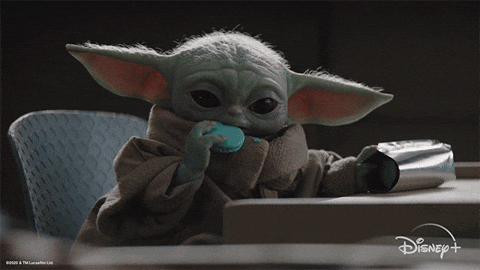
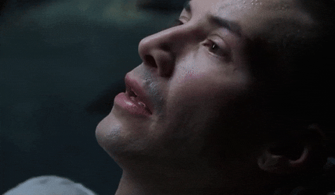
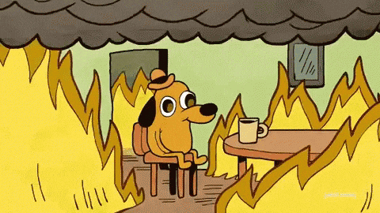
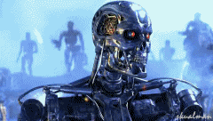
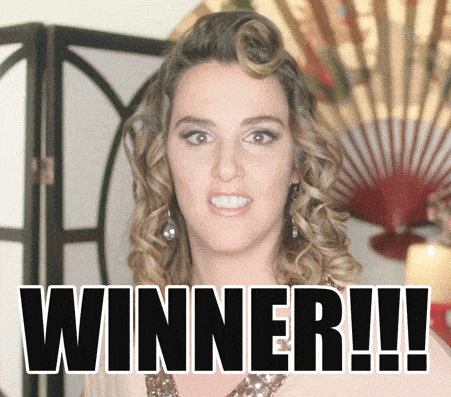
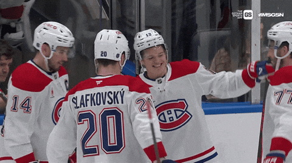
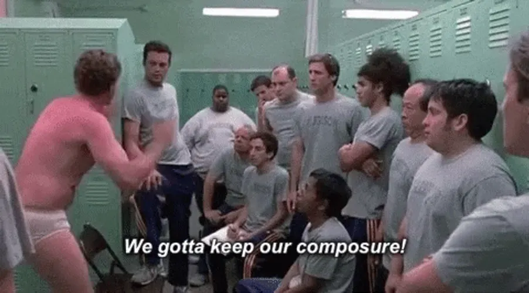
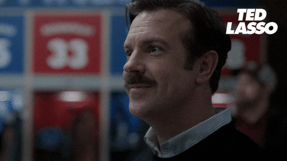

1
Je termine mon AEC en développement d'applications mobiles où j'ai reçu une bourse d'excellence!
J'y suis devenu une machine à absorber de nouveaux stacks techniques, preuve de combien le « ramp up » risque de se faire très rapidement.
Parce qu'un bon dév, c'est pas juste quelqu'un qui sait coder un regex complexe en quatre secondes.
J'y suis devenu une machine à absorber de nouveaux stacks techniques, preuve de combien le « ramp up » risque de se faire très rapidement.
Parce qu'être dans un bon groupe est siiiii important.

Mais du côté artistique, on dépend souvent des institutions et ça finit par user de ne jamais savoir ce qui nous attend. Je suis donc de retour à mes premiers amours où j'aimerais m'investir quelque part à long terme.

Je sais faire la différence entre une question qui mérite de déranger quelqu'un et des questions googlabes. Une belle économie de temps pour toute l'équipe!

Pour une fraction des tokens!
Et plus sérieusement, j'utilise l'IA de façon réfléchie et j'essaie constamment d'évaluer à quel moment lui faire confiance et quand vérifier son travail. Tout en restant super poli au cas où...

Ce qui est toujours pratique quand on fait du front-end ou quand on présente des projets.

Je suis un trooper avec un bon esprit d'équipe, mais j'arrive aussi à entrer dans ma bulle et foncer en solo quand c'est le temps.

C'est aussi un atout en informatique! Ça évite les malentendus dans les tickets, ça donne une documentation technique que les autres devs comprennent réellement, et ça sauve beaucoup de temps quand vient le temps de composer un prompt précis à notre IA préférée.
S'il y a un élément commun entre mes deux carrières, c'est la résolution de problème! Trouver des solutions efficaces rapidement, c'est toujours un défi que je trouve hyper valorisant.
Et ce, en gardant ma bonne humeur!

Né à Amos, en Abitibi, j'ai vécu la deuxième moitié de ma vie à Montréal.
S'améliorer, c'est ce que j'aime le plus au monde. Je suis habitué au monde artistique où la critique est fréquente et comme le projet vient souvent de ton cœur, ça peut heurter un peu plus quand on n'est pas habitué. En code, j'ai carrément hâte d'en recevoir et c'est une étape que je respecte beaucoup.
